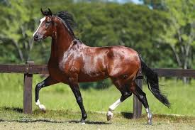

Cavalos Quato de Milha
- Quarto de milha é uma raça de cavalo originária dos Estados Unidos.
- Começou a formar-se com a chegada dos europeus ao continente norte-americano, por volta de 1611, pelo cruzamento dos cavalos trazidos pelos ingleses e espanhóis, e cavalos de indígenas, também de ascendência ibérica.
- O nome do quarto de milha foi fundamentado em cima do que esse cavalo era o mais veloz em um quarto de milha, ou seja, na distância de 402 metros.
